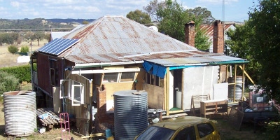
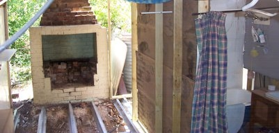
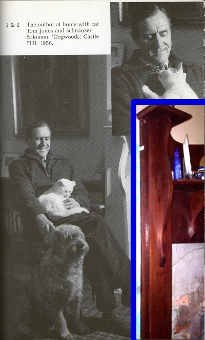
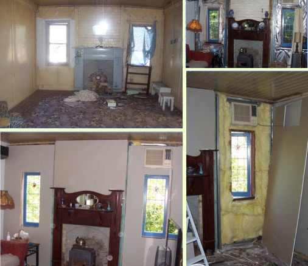
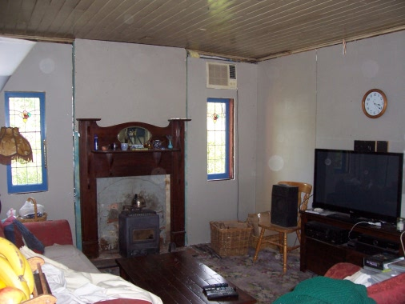
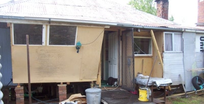

News for 2012
2019 2018 2017 2016 2015 2014 2013 2011 2010 2009 2008
________________________________________________
Last News of the Year
December 31 2012
The widening of the back verandah is now visibly real:  and here you can see the temporary bathroom 2.0, and on the left is the space where the final bathroom will be - yes, it will have a fireplace! ________________________________________________
Patrick White's Fire-surround
November 16 2012
________________________________________________
Fireplace Progresses Adequately
October 28 2012
We bought the fire-surround for $51 on ebay a few months ago, and I put it onto the wall while adding some lining and insulation. The top-left is how we first saw the room back in 07:  Note: In the bottom-left photo you can see translucent circles called "orbs". They aren't on the camera lens as another photo shows:  These are only found in digital photographs. Apparently you can pick your own explanation - one is that they are an intelligent life-form from a parallel universe, but nut-jobs think it is an artefact of the interaction of light and dust in low light using a cheap camera...________________________________________________
Redesign of Website
October 1 2012
The news is now right here on the Home Page. I find on other websites that this is helpful because I go there to check the news but the rest of the site is right there as well.The colour scheme is supposed to vaguely match the colours of the house.
And here are an alien cat and dog...

________________________________________________
Temporary Shed/Pantry
September 28 2012
Okay, it looks a bit weird. We needed some usable space where the extension is going - a bit of work-space and the fridge and freezer. But I need to be able to build the new floor underneath, so it's raised: The (temporary) bathroom is still 1.0 - I'll be able to work around it for a bit longer.